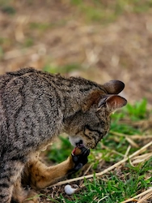
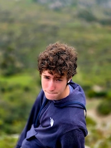
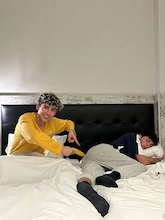
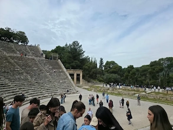
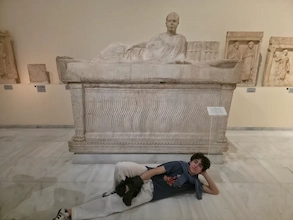
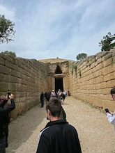
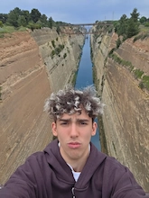
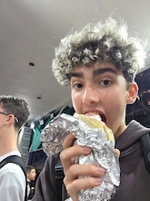

Tumbas y Museos
Tumbas decepcionantes y museos de marmol.
Otro día que empezamos en bus. En el camino hacia el anfiteatro, paramos en un canal que unificaba dos mares y allí Amaia se compró una bufanda porque tenía frío. El anfiteatro estaba bastante guay, ya que la acústica estaba diseñada para que al interlocutor del medio se le escuchara desde todo el teatro. Hicimos la prueba poniendo a Martiño abajo hablando y le oíamos. También hicimos la típica prueba de la monedita y también funcionó. Luego nos fuimos a la tumba de Agamenón y era increíblemente decepcionante, la verdad. Una cúpula pocha enterrada en una montaña sin nada realmente interesante por dentro.
Después subimos a una montaña en la cual se encontraban las ruinas de una fortaleza, pero lo más interesante fue sacar fotos con el paisaje probando todas las configuraciones de retrato en la cámara. También Martín casi acaba noqueado por un pedrazo de Álvaro. Volvimos al bus y fuimos a comer a un sitio con temática griega tradicional donde realmente comimos poco; no es que estuviera malo, pero no era casi nada.


Nos dirigimos al Museo Nacional de Atenas, donde había estatuas bastante chulas y nos echaron la bronca por sacar esa foto de Martiño; me hicieron borrarla, pero luego la restauré de la nube porque ya se había subido, jaja. Tras el museo nos dejaron libres por el centro y nos dirigimos directamente a una tienda de armas de airsoft que había encontrado en el Maps. Estuve a puntito de coger una réplica ya que había conseguido el permiso de Sergio, pero el tío de la tienda no me la quiso vender en el último momento 🙁.
Después continuamos visitando Atenas y me comí un giros en un puestito en el cual le había prometido el primer día al cocinero que volvería otro día, y volví. Volvimos al hotel para nuestra última noche por un barrio más chungo de lo normal, por el cual vimos prostitutas, drogas y gente fumando LSD. Llegamos al hotel y dormimos.
-

-

-

-

-

-
